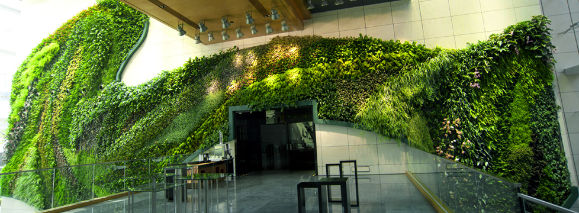
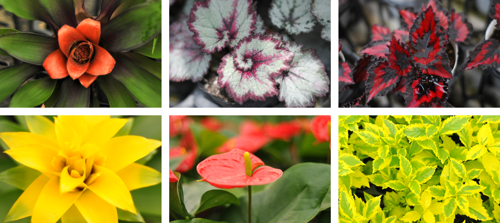

会社概要
会社概要

社 名：株式会社スタジオ縁
代 表：佐瀬 一宏
所 在：本店 ： 千葉県船橋市浜町1-6ファミリータウン5棟113
匝瑳事務所： 千葉県匝瑳市堀川4415
取引銀行：千葉銀行、京葉銀行、東京東信用金庫、千葉興銀
設 立：2013年7月18日
資 本：7,000,000円
(R.4.6月 増資 5,000,000円)
従業員 ：スタッフ（正社員） 25人
スタッフ（外注＋アルバイト） 13人
※スタッフ女性比率25％
顧問弁護士：秋山慎太郎総合法律事務所 弁護士 秋山慎太郎
社会保険労務士：神長労務管理事務所 社労士、行政書士 神長 久
登録団体：船橋商工会議所
習志野商工会議所
船橋市建設業協同組合
千葉県中小企業家同友会
一級造園施工管理技士の会
主要業務：造園工事・植栽管理・舗装工事・外構工事、解体工事、建築、管、塗装、貸し植木、ヨガ教室、Cafe、ドローン撮影、警備業、樹木輸出
得意業務：提案型緑化メンテナンス
許 可：建設業許可取得（造園、とび・土工、土木、舗装、解体、石工事、水道） 【千葉県知事（一般-27）第50079号】
産業廃棄物収集運搬許可取得 第01200194090号
ISO 9001取得
樹木医
自然再生士
1級造園施工管理技士（監理技術者）
1級土木施工管理技士（監理技術者）
1級建築施工管理技士（監理技術者）
1級管工事施工管理技士（監理技術者）
1級舗装施工管理技術者
2級造園施工管理技士
2級土木施工管理技士
2級建築施工管理技士 （躯体）
2級管工事施工管理技士
2級舗装施工管理技士
測量士補
建築物環境衛生管理技術者
清掃作業監督者
仮設安全監理者
下水道技術検定 （第2種）
管更生技術講習
排水設備工事責任技術者
酸素欠乏・硫化水素危険作業者
仕切弁等操作
新除染等業務特別教育
足場点検実務者
第二種電気工事士
宅地建物取引士
CPDS 4名取得
低電圧取扱業務に係る特別教育
研削といし試運転・電気取扱業務
自由研削用といし
石綿取扱い作業従事者特別教育
フルハーネス特別教育
巻上機
あと施工アンカー
地山掘削作業主任者
土留め支保工作業主任者
足場組立作業主任者
木造建築物の組立て等作業主任者
コンクリート工作物の解体等作業主任者
街路樹剪定士
千葉県農薬管理指導士
農薬安全使用研修
伐木等（大径木等）
刈払機安全衛生教育
ロープ高所作業特別教育
遊具日常点検講習
グリーンアドバイザー
甲種防火管理新規講習
防災管理新規講習
丙種火薬類製造保安責任者
ドローン操縦士回転翼3級
当社の強み
・ 多様な技術とアイディアでご提案し、スピード感のある仕事を皆様に提供します。
・ あらゆる資格を持った社員がいますので、安心して仕事任せる事ができます。
【 資格と施工内容 】
【 樹木医 】
“樹木医”とは、樹木のお医者さんです。
樹木医の仕事内容
・庭・公園などの樹木の適切な管理・工事
・古木・樹林地の保全、維持管理活動
・ビルやマンションなどの植栽管理
・その土地に合った公園などの植栽工事、維持管理
【 自然再生士 】
“自然再生士”とは、自然再生の推進者です。
自然再生士の仕事内容
・地域特性を活かした施工・維持管理
・豊かな森林再生・保育活動
・自然を活かした街路（造園）工事・維持管理
・自然を活かした屋上緑化計画・施工・維持管理
【 街路樹剪定士 】
“街路樹剪定士”とは、樹形づくりの基本手法に立脚し卓越した技術者
街路樹剪定士の仕事内容
・街路の景観に沿った剪定作業
・街づくりに合った剪定作業・植栽工事
・街路樹の剪定作業
・公園内の園路樹木の剪定作業
・ビル・マンションなどの高中木剪定作業
その他にも土木、建築、造園工事、植栽管理に必要な資格所持者が数多く在籍しています。
代表挨拶
長年に及ぶ経験と知識を生かし、個人から企業まで多様なニーズにお応えしたい。そんな緑化提案を目指して２０１３年、株式会社スタジオ縁は誕生しました。
多岐に渡る造園業務において私達が特に推進する「緑化提案」、それは一般的な造園業務は元より無限の可能性を秘めた表現方法の一つでも在ります。基本コンセプトは”人と自然の共和と共存”、都市部に限らずその姿を減らす自然の形を今一度再認識して頂ける総合的なグリーンデザインを念頭に沢山の緑化を行っています。
今目の前に在る物が今後も在るとは限りません、それは人が生活していく中で「豊かさ」を求める限り止まる事の無い歯車として廻り続けます。
十人十色、それぞれが求める豊さの価値は実に多く、そのどれもに合致する様なサービスは現代の技術を以てしても実現されてはいません。しかし普遍的な豊さの象徴は古代から、それは人が生活する中でどうしても共存しなければ成らない物として一つだけ存在し続けています。
そう、それは「自然」です。
近代化された生活や環境下に在って、唯一変わる事の無い豊かさの象徴。そして絶対的な存在でもある自然、時に人に牙を剥く自然との共和と共存は人が生きる上で永遠のテーマなのかもしれません。
私達スタジオ縁は希薄化した自然の豊かさとその意味に再び光を当て、そして新しい価値を沢山の人に知って頂きたいと考えています。端的な緑化事業とせず、長く愛され”そこに在る事が当然”の様な緑化提案、それがスタジオ縁が目指す人と自然の現代における関係性なのです。
株式会社 スタジオ縁 代表取締役 佐瀬 一宏
大切な価値観と社員に大切にしてほしいこと
私たちは、縁があり、ここに集結しています
【一人で悩むより、みんなで考えよう】
向かい合って、ありがとうと伝え 社員とともに喜び、楽しみ、成長できる会社であり続けます。
私たちは、縁があり緑に携わる仕事をしています
【閃きは剣、スピードは盾】
・植物の持つ、魅力、生命力、癒しを絶やさぬよう未来を緑化します。
・多様な技術とアイディアを駆使し、スピードある行動を皆様に提供します。
私たちは、縁があり地域、顧客に必要とされています
【縁も運も実力のうちと考えます】
・地域、顧客に必要とされるありがたさを都度感じ、誠実な行動と、思いやりの心で、安心安全を皆様に提供します。
沿革
2013年7月 株式会社スタジオ縁 設立
2013年7月 船橋事務所設置
2015年8月 株式会社スタジオ縁 船橋本社オフィス設立
2016年4月 船橋商工会議所 入会
2017年3月 船橋市建設業協同組合 入会
2020年8月 新オフィス設立
2022年6月 習志野商工会議所 入会
組織関連図
株式会社スタジオ縁
船橋本社事務所（千葉県船橋市）
〒273-0012 千葉県船橋市浜町1-6ファミリータウン5棟112
匝瑳圃場（千葉県匝瑳市堀川）
企業間取引のみの為、住所は記載しておりません。
常滑観葉植物／生産ナセリー（愛知県常滑市）
企業間取引のみの為、住所は記載しておりません。

協力企業としての密接な連携関係にある常滑営業所では広大な敷地を利用して品質の高いインテリアグリーンの生産を行っております、沢山のお客様に満足して頂くだけの種類、品数、そして何より徹底された管理状態から生み出される品質を是非お確かめ下さい。